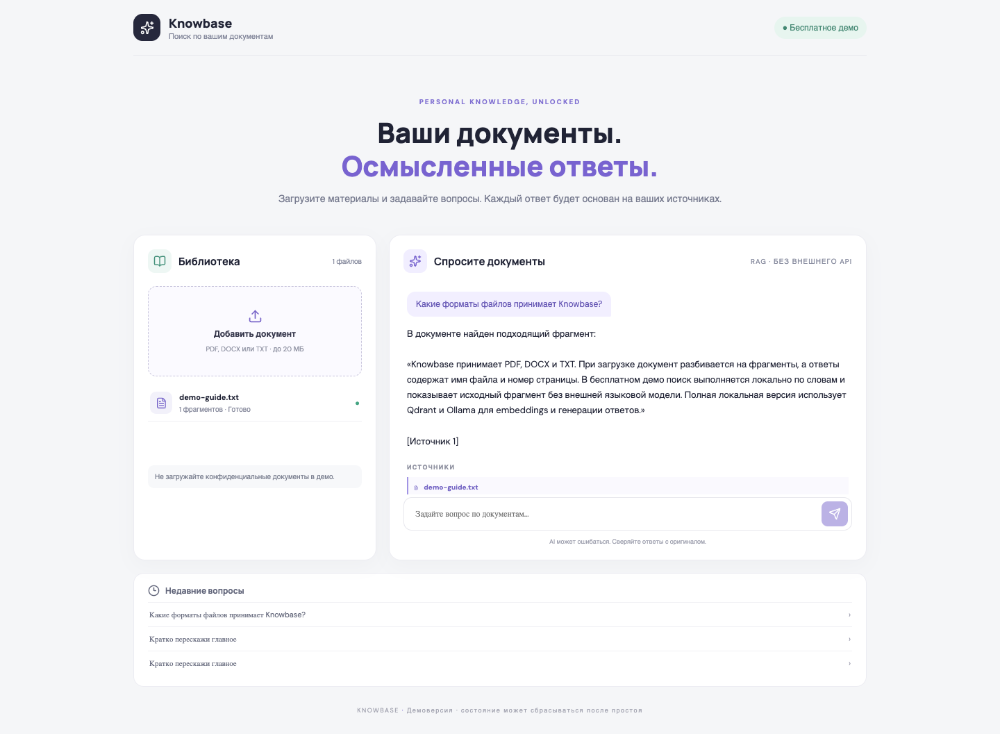

Team projects and tasks · interactive demo01

Pulseboard
Small teams need a clear view of who is working on what and what is done. Pulseboard keeps projects and tasks in one place.
FastAPI / PostgreSQL / SQLAlchemy / Redis / Celery
What the project demonstrates ↗
The API demonstrates JWT authentication, tenant and role-based access, project and task workflows, idempotent webhooks, background jobs, and event delivery.
The interactive board connects to the API and gives each visitor a temporary isolated session. The free service may sleep and reset demo data after a restart.
Document search · public demo02

Knowledge Assistant
Upload manuals or PDFs, ask questions in plain language, and get answers grounded in cited document passages.
FastAPI / React / RAG / OpenRouter / cited sources
Try the demo in a minute
- Open the assistant using the button above.
- Upload a PDF, DOCX, or TXT file up to 10 MB, or use the built-in
demo-guide.txt sample. - Ask a question about the content, then check the cited passage, filename, and page.
This is a shared demo: other visitors can see uploaded documents and questions. Do not upload personal or confidential files. Free AI routing may have availability limits and quotas.
What the project demonstrates ↗
FastAPI processes PDF, DOCX, and TXT files, splits them into passages, stores question history, and returns matching sources. The hosted demo generates answers with OpenRouter free models using retrieved passages.
The app and API are available online without installation. A local development profile with Qdrant and Ollama is also included.
AI and data processing03
AI News RSS Bot
Collects RSS posts, removes semantic duplicates, and groups related stories before sending them to Telegram.
Python / Ollama / Embeddings / PostgreSQL
Source code ↗
Telegram Mini App04
Socialera
A service-ordering MVP with a catalog, balance, transaction history, referrals, and admin workflows.
Telegram Mini App / API / Database
Source code ↗
Equipment monitoring · in development05
City Sentinel
A backend for collecting equipment telemetry and tracking events and anomalies.
FastAPI / PostgreSQL / InfluxDB / MQTT
Open prototype ↗
Payments and integrations06
E-commerce payment flow
Integration of Tilda, T-Bank Acquiring, and ATOL Online with payment-status checks and receipt fiscalization. Accepted by the client.
Payments / Webhooks / API